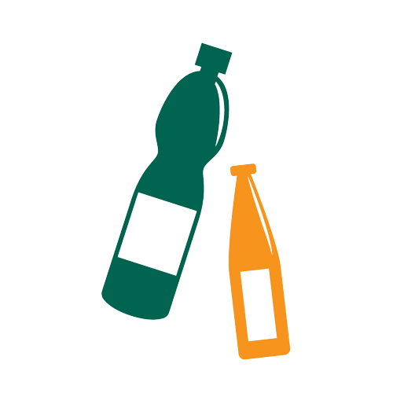
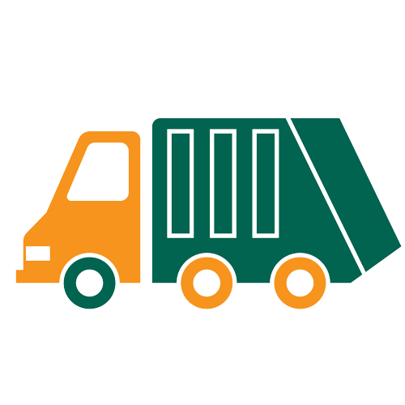

1. Preparando
Limpe e prepare os materiais a serem descartados.
2. Descartando
Registre a coleta e seus detalhes ao descartar.
Catadores serão procurados e notificados.
3. Coleta Realizada
Pronto. Agora esperar o Catador confirmado buscar o descarte.
